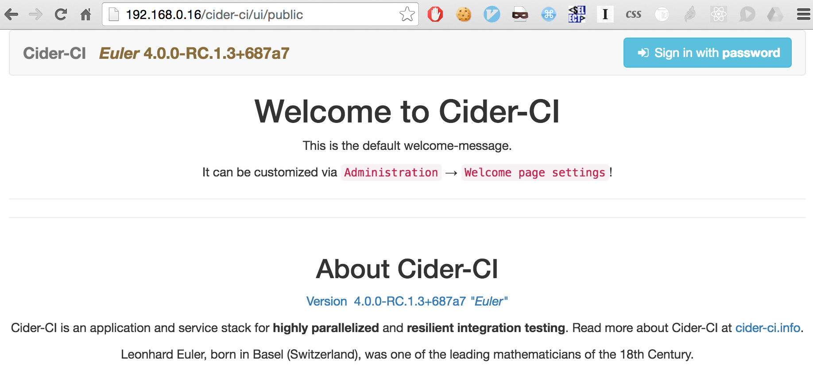
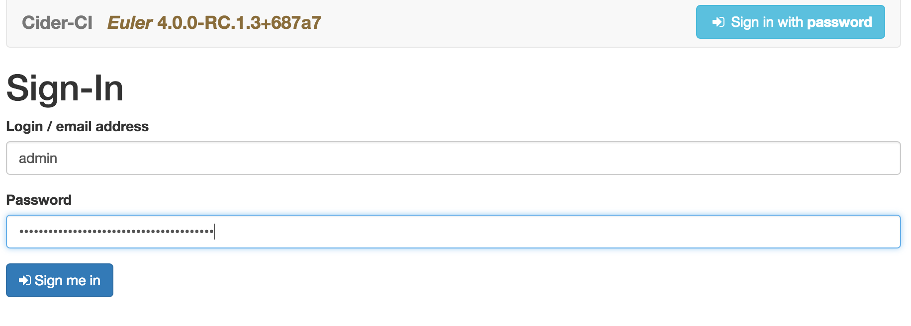
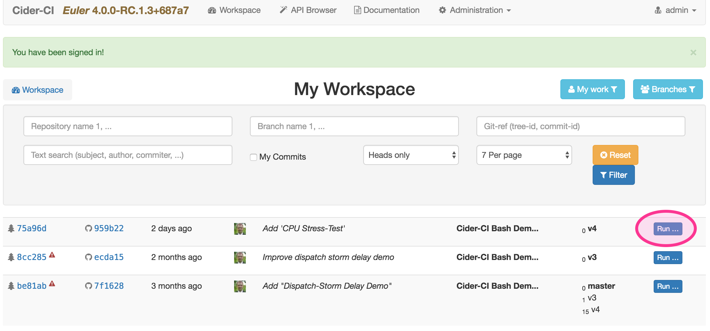
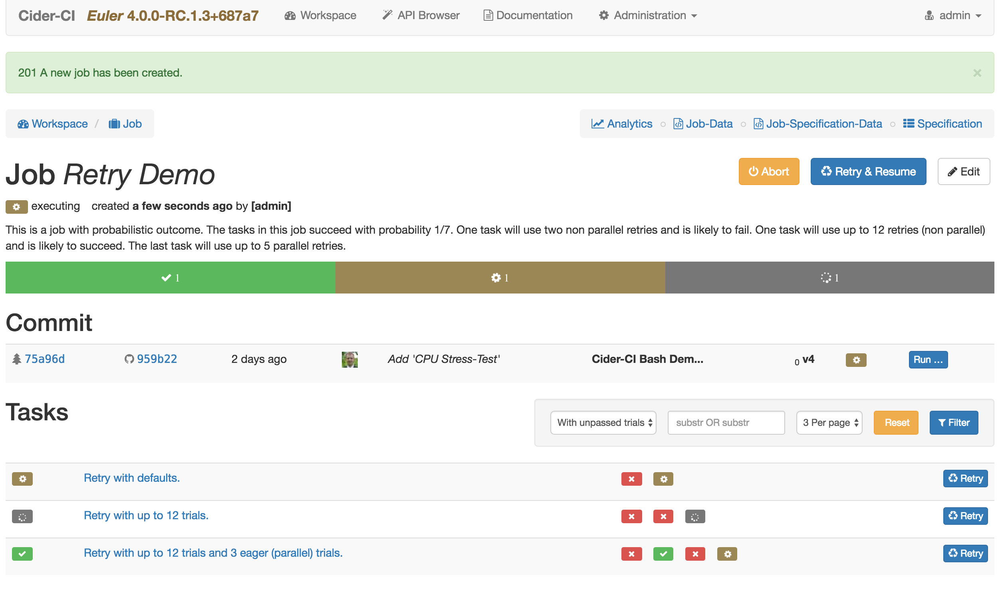

Cider-CI Quick Start Guide
This is a quick start guide to Cider-CI. It takes two commands to install a whole Cider-CI Environment. The only requirements are an Ubuntu 16.04 or Debian 8 - Jessie system. We recommend 3GB RAM and two cores for the demo setup.
The deploy and set-up procedure is by its nature invasive. We recommend to use a virtual machine for the demo installation.
Table of Contents
Installation
Log in as root to your system and invoke the following two commands:
apt-get update && apt-get install curl -y
curl https://raw.githubusercontent.com/cider-ci/cider-ci_deploy/release/bin/quick-install.sh | bash
Wait until everything is finished. The duration depends on the power of our machine and the speed of the Internet connection, 30 Minutes or more are not uncommon.
The install may abort due to temporary problems with downloads. In that case just run it again.
First Steps
Open the http://IP-OF-YOUR-MACHINE. You will be redirected to the welcome page.

Click the Sign in with password button, and then provide the credentials. Use admin as the login. You can find the password in the terminal output of the install script:
ok: [demo] => {
"ci_master_secret": "7BFdI0BOD1Qz4uqA2HEzF9cOyJ5Aa4cfzh8mGLFV"
}
If that is not available you can find it through the following command:
root@xenial-16:~# cat /tmp/cider-ci/deploy/inventories/demo/master_secret.txt
7BFdI0BOD1Qz4uqA2HEzF9cOyJ5Aa4cfzh8mGLFV
If you rerun the demo setup with the command from above a new ci_master_secret will be created and a new password for admin will be set.

You will be redirected to the My Workspace page. Click on Run of the most recent commit of the Cider-CI Bash Demo Project.

Run and watch some of the provided jobs. Maybe start with the "Retry Demo":
It is possible to run almost all of the provided jobs. Some will not succeed because their final state is not deterministic - like the "Retry Demo". Some will fail because they are designed to fail, and some are designed not start but cause an error.

Where To Go From Here
If you haven't looked at it yet: the Introduction gives information about the entities in, and the rational behind Cider-CI.
If you want to configure your project to be tested with Cider-CI read the Project Configuration guide.
If you want to customize you installation read the Setup and Deployment guide.